OneDSonly
Sophie
2026-10-23
Last updated: 2026-10-27
Checks: 7 0
Knit directory: Integration/
This reproducible R Markdown analysis was created with workflowr (version 1.7.2). The Checks tab describes the reproducibility checks that were applied when the results were created. The Past versions tab lists the development history.
Great! Since the R Markdown file has been committed to the Git repository, you know the exact version of the code that produced these results.
Great job! The global environment was empty. Objects defined in the global environment can affect the analysis in your R Markdown file in unknown ways. For reproduciblity it’s best to always run the code in an empty environment.
The command set.seed(20260910) was run prior to running
the code in the R Markdown file. Setting a seed ensures that any results
that rely on randomness, e.g. subsampling or permutations, are
reproducible.
Great job! Recording the operating system, R version, and package versions is critical for reproducibility.
Nice! There were no cached chunks for this analysis, so you can be confident that you successfully produced the results during this run.
Great job! Using relative paths to the files within your workflowr project makes it easier to run your code on other machines.
Great! You are using Git for version control. Tracking code development and connecting the code version to the results is critical for reproducibility.
The results in this page were generated with repository version 8481f0d. See the Past versions tab to see a history of the changes made to the R Markdown and HTML files.
Note that you need to be careful to ensure that all relevant files for
the analysis have been committed to Git prior to generating the results
(you can use wflow_publish or
wflow_git_commit). workflowr only checks the R Markdown
file, but you know if there are other scripts or data files that it
depends on. Below is the status of the Git repository when the results
were generated:
Ignored files:
Ignored: .Rhistory
Ignored: .Rproj.user/
Ignored: analysis/figure/
Untracked files:
Untracked: analysis/Integratin_test.Rmd
Untracked: analysis/Integration3.Rmd
Untracked: analysis/core
Note that any generated files, e.g. HTML, png, CSS, etc., are not included in this status report because it is ok for generated content to have uncommitted changes.
These are the previous versions of the repository in which changes were
made to the R Markdown (analysis/OneDSonly.Rmd) and HTML
(docs/OneDSonly.html) files. If you’ve configured a remote
Git repository (see ?wflow_git_remote), click on the
hyperlinks in the table below to view the files as they were in that
past version.
| File | Version | Author | Date | Message |
|---|---|---|---|---|
| Rmd | 8481f0d | Sophie | 2026-10-27 | 404 fix |
Setup
rm(list=ls())
gc() used (Mb) gc trigger (Mb) max used (Mb)
Ncells 902515 48.2 1743091 93.1 1315497 70.3
Vcells 1580310 12.1 8388608 64.0 2367240 18.1library(readr)
library(dplyr)
library(ggplot2)
library(Seurat)
library(hdf5r)
library(scCustomize)
library(patchwork)
library(cowplot)
library(ggrepel)
library(workflowr)
library(scDblFinder)
library(clustree)
library(harmony)
library(speckle)
library(MAST)
library(tibble)
library(EnhancedVolcano)
library(ggarchery)
library(ggtangle)
library(clusterProfiler)
library(org.Hs.eg.db)
library(GO.db)
library(DOSE)
library(fgsea)
library(forcats)
library(SCpubr)
library(assertthat)
library(UCell)
library(DT)
library(ggforce)
library(enrichplot)
library(ggrain)
library(ComplexHeatmap)
library(tidyverse)
library(circlize)
library(ggpubr)Running tranfer anchors separately
After trying almost any integration method and either getting a separate Cluster for the MT-Macs or then over integrating this is an attempt to take public datasets and inferring anchors to specific groups.
outputdir <- "/shares/rheumatologie.usz/Sophie/Gabi_Projects/Data_Sets_Heart/"
path <- "/shares/rheumatologie.usz/Sophie/Gabi_Projects/Data_Sets_Heart/MT_data_small.rds"
MT_data <- read_rds(path)
path <- "/shares/rheumatologie.usz/Gino/Datasets_heart/Litvinukova.rds"
Litvinukova_data <- read_rds(path)
head(Litvinukova_data@meta.data) NRP age_group cell_source
AAACCCAAGAACGCGT-1-H0015_apex No 50-55 Harvard-Nuclei
AAACCCAAGCAAACAT-1-H0015_apex No 50-55 Harvard-Nuclei
AAACCCAAGCTACTGT-1-H0015_apex No 50-55 Harvard-Nuclei
AAACCCAGTACCGCGT-1-H0015_apex No 50-55 Harvard-Nuclei
AAACCCATCAAACCCA-1-H0015_apex No 50-55 Harvard-Nuclei
AAACCCATCGCAACAT-1-H0015_apex No 50-55 Harvard-Nuclei
cell_type donor gender n_counts
AAACCCAAGAACGCGT-1-H0015_apex Smooth_muscle_cells H5 Female 688
AAACCCAAGCAAACAT-1-H0015_apex Ventricular_Cardiomyocyte H5 Female 3216
AAACCCAAGCTACTGT-1-H0015_apex Ventricular_Cardiomyocyte H5 Female 3182
AAACCCAGTACCGCGT-1-H0015_apex Pericytes H5 Female 1202
AAACCCATCAAACCCA-1-H0015_apex Ventricular_Cardiomyocyte H5 Female 3804
AAACCCATCGCAACAT-1-H0015_apex Pericytes H5 Female 3529
n_genes percent_mito percent_ribo region
AAACCCAAGAACGCGT-1-H0015_apex 480 0.0043604653 0.002906977 AX
AAACCCAAGCAAACAT-1-H0015_apex 1365 0.0009328358 0.001243781 AX
AAACCCAAGCTACTGT-1-H0015_apex 1521 0.0009428033 0.002199874 AX
AAACCCAGTACCGCGT-1-H0015_apex 726 0.0008319467 0.000000000 AX
AAACCCATCAAACCCA-1-H0015_apex 1584 0.0002628812 0.001314406 AX
AAACCCATCGCAACAT-1-H0015_apex 1796 0.0017001984 0.001133466 AX
sample scrublet_score source type version
AAACCCAAGAACGCGT-1-H0015_apex H0015_apex 0.03591682 Nuclei DBD V3
AAACCCAAGCAAACAT-1-H0015_apex H0015_apex 0.14712154 Nuclei DBD V3
AAACCCAAGCTACTGT-1-H0015_apex H0015_apex 0.18575064 Nuclei DBD V3
AAACCCAGTACCGCGT-1-H0015_apex H0015_apex 0.03591682 Nuclei DBD V3
AAACCCATCAAACCCA-1-H0015_apex H0015_apex 0.10806175 Nuclei DBD V3
AAACCCATCGCAACAT-1-H0015_apex H0015_apex 0.13934426 Nuclei DBD V3
cell_states Used
AAACCCAAGAACGCGT-1-H0015_apex SMC1_basic Yes
AAACCCAAGCAAACAT-1-H0015_apex vCM1 Yes
AAACCCAAGCTACTGT-1-H0015_apex vCM1 Yes
AAACCCAGTACCGCGT-1-H0015_apex PC2_atria Yes
AAACCCATCAAACCCA-1-H0015_apex vCM2 Yes
AAACCCATCGCAACAT-1-H0015_apex PC4_CMC-like YesDimPlot(Litvinukova_data, reduction = "umap", group.by = "cell_type")Rasterizing points since number of points exceeds 100,000.
To disable this behavior set `raster=FALSE`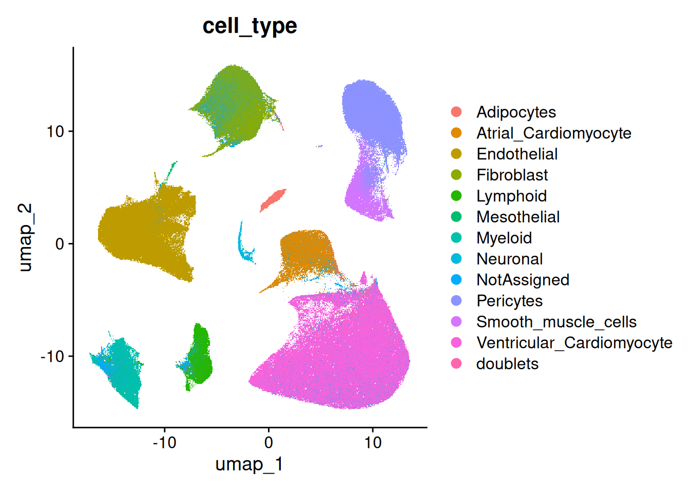
MT_data_norm <- NormalizeData(MT_data, normalization.method = "LogNormalize", scale.factor = 10000)
DefaultAssay(MT_data_norm) <- "RNA"
Litvinukova_data <- FindVariableFeatures(Litvinukova_data, selection.method = "vst", nfeatures = 2000)
dim(MT_data)[1] 38606 1126dim(Litvinukova_data)[1] 33538 486134# for demonstration, split the object into reference and query
pbmc.reference <- Litvinukova_data[, 1:86134]
pbmc.query <- MT_data[, 1:1126]
# perform standard preprocessing on each object
pbmc.reference <- NormalizeData(pbmc.reference)
pbmc.reference <- FindVariableFeatures(pbmc.reference)
pbmc.reference <- ScaleData(pbmc.reference)Centering and scaling data matrixpbmc.query <- NormalizeData(pbmc.query)
pbmc.query <- FindVariableFeatures(pbmc.query)
pbmc.query <- ScaleData(pbmc.query)Centering and scaling data matrix# find anchors
anchors <- FindTransferAnchors(reference = pbmc.reference, query = pbmc.query)Performing PCA on the provided reference using 1762 features as input.Projecting cell embeddingsFinding neighborhoodsFinding anchors Found 619 anchors# transfer labels
predictions <- TransferData(
anchorset = anchors,
refdata = pbmc.reference$cell_type
)Finding integration vectorsFinding integration vector weightsPredicting cell labelspbmc.query <- AddMetaData(object = pbmc.query, metadata = predictions)
pbmc.queryAn object of class Seurat
38606 features across 1126 samples within 1 assay
Active assay: RNA (38606 features, 2000 variable features)
3 layers present: counts, data, scale.data
3 dimensional reductions calculated: pca, harmony, umapp1 <- DimPlot(
pbmc.reference,
reduction = "umap",
group.by = "cell_type",
label = TRUE
) + ggtitle("Clean Primary Reference Atlas")
p2 <- DimPlot(
pbmc.query,
reduction = "umap",
group.by = "predicted.id",
label = TRUE
) + ggtitle("Mapped Query (LogNormalize)")
p1 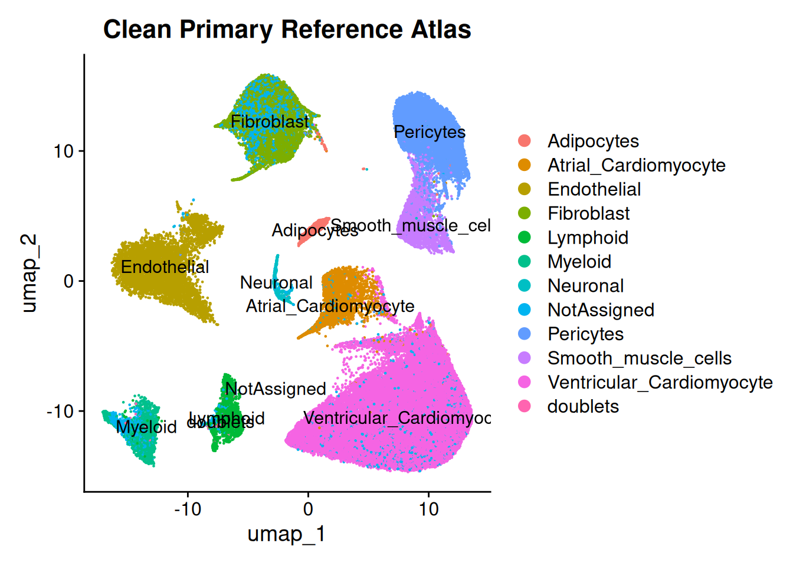
p2 # good, all except 3 cells cluster to myeloid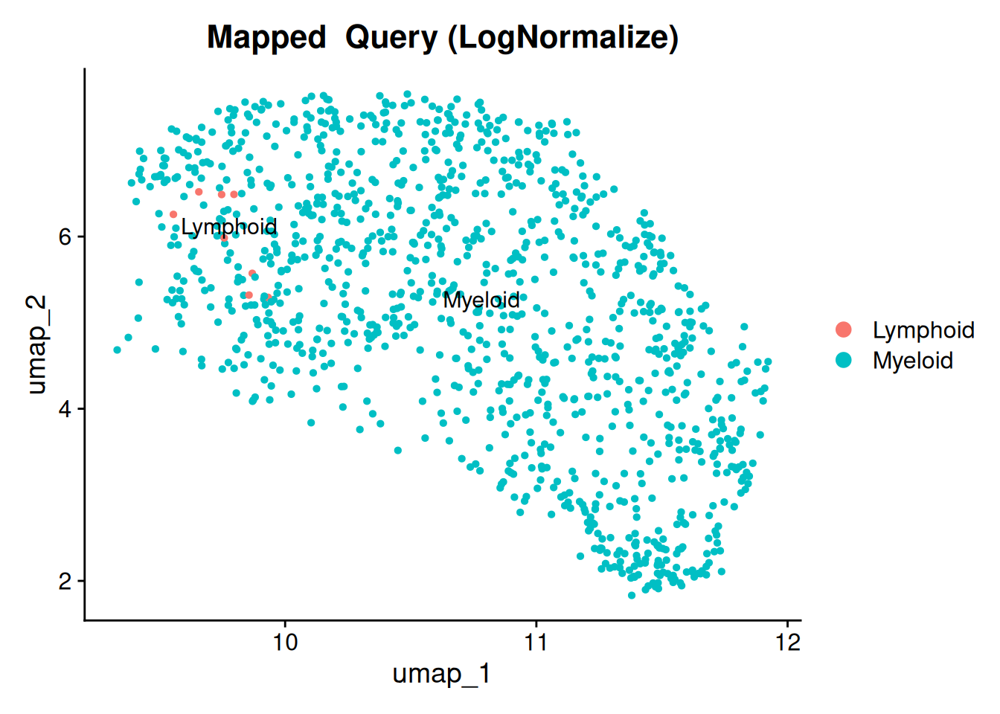
subset the myeloid to see where my MT macs cluster to
Litvinukova_myeloid <- subset(Litvinukova_data, cell_type == "Myeloid")
dim(Litvinukova_myeloid)[1] 33538 23028pbmc.reference <- Litvinukova_myeloid[, 1:23028]
pbmc.query <- MT_data[, 1:1126]
# perform standard preprocessing on each object
pbmc.reference <- NormalizeData(pbmc.reference)
pbmc.reference <- FindVariableFeatures(pbmc.reference)
pbmc.reference <- ScaleData(pbmc.reference)Centering and scaling data matrixpbmc.query <- NormalizeData(pbmc.query)
pbmc.query <- FindVariableFeatures(pbmc.query)
pbmc.query <- ScaleData(pbmc.query)Centering and scaling data matrix# find anchors
anchors <- FindTransferAnchors(reference = pbmc.reference, query = pbmc.query)Performing PCA on the provided reference using 1652 features as input.Projecting cell embeddingsFinding neighborhoodsFinding anchors Found 371 anchors# transfer labels
predictions <- TransferData(
anchorset = anchors,
refdata = pbmc.reference$cell_states
)Finding integration vectorsFinding integration vector weightsPredicting cell labelspbmc.query <- AddMetaData(object = pbmc.query, metadata = predictions)
pbmc.queryAn object of class Seurat
38606 features across 1126 samples within 1 assay
Active assay: RNA (38606 features, 2000 variable features)
3 layers present: counts, data, scale.data
3 dimensional reductions calculated: pca, harmony, umapp1 <- DimPlot(
pbmc.reference,
reduction = "umap",
group.by = "cell_states",
label = TRUE
) + ggtitle("Clean Primary Reference Atlas")
p2 <- DimPlot(
pbmc.query,
reduction = "umap",
group.by = "predicted.id",
label = TRUE
) + ggtitle("Mapped Query (LogNormalize)")
p3 <- DimPlot(
pbmc.query,
reduction = "umap",
group.by = "condition",
label = TRUE
) + ggtitle("Mapped Query (LogNormalize)")
p1 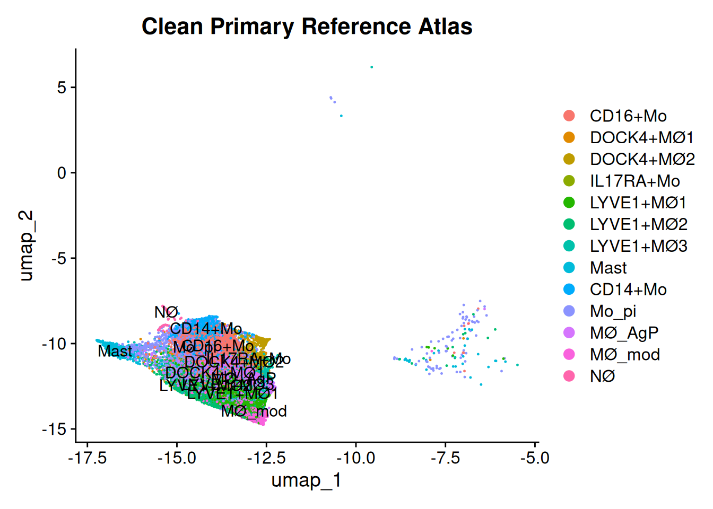
p2 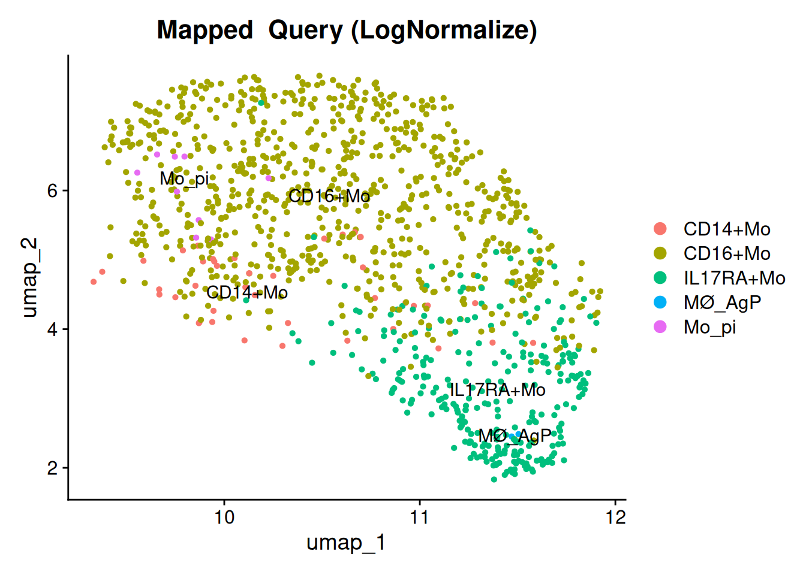
p3
pbmc.query_meta <- pbmc.query@meta.data
ggplot(pbmc.query_meta, aes(x = condition, fill = predicted.id)) +
geom_bar(position = "stack") +
theme_classic() +
labs(y = "Proportion of Cells", x = "MT TGF_status", title = "Shift in Integrated Clusters (+/- TGFb)")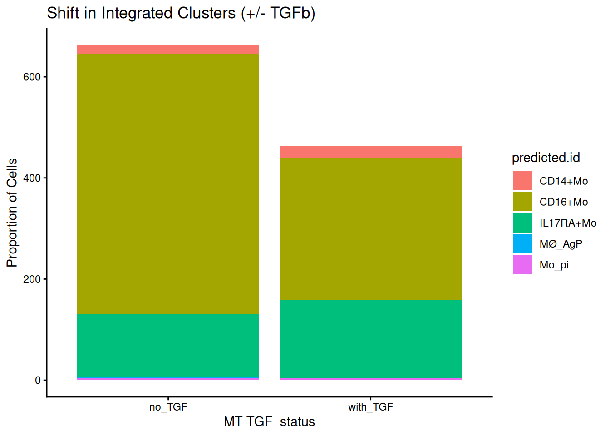
p2
FeaturePlot_scCustom(pbmc.query, features = c("FCGR3A", "CD14", "IL17RA"))
NOTE: FeaturePlot_scCustom uses a specified `na_cutoff` when plotting to
color cells with no expression as background color separate from color scale.
Please ensure `na_cutoff` value is appropriate for feature being plotted.
Default setting is appropriate for use when plotting from 'RNA' assay.
When `na_cutoff` not appropriate (e.g., module scores) set to NULL to
plot all cells in gradient color palette.
-----This message will be shown once per session.-----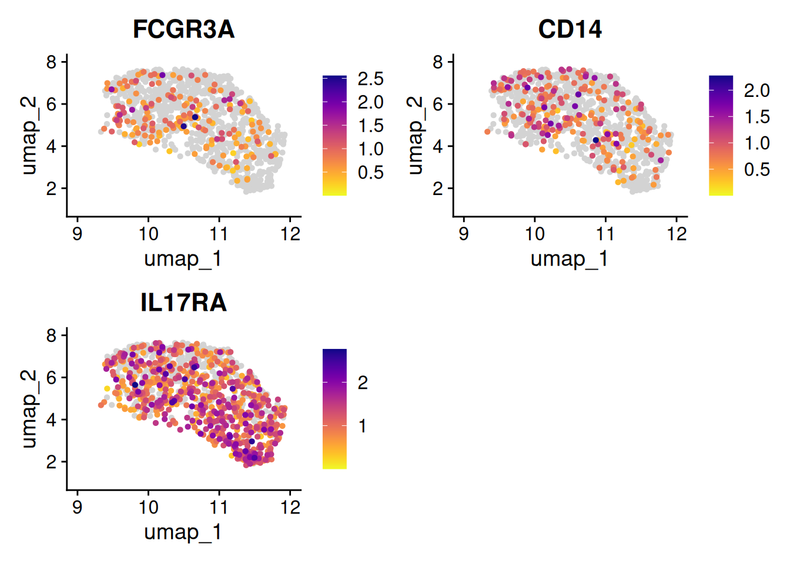
transfer anchors with disease state usin chaffin dataset
path <- "/shares/rheumatologie.usz/Gino/Datasets_heart/Chaffin.rds"
Chaffin_data <- read_rds(path)
head(Chaffin_data@meta.data) orig.ident nCount_originalexp nFeature_originalexp
TTCTTCCGTTCAACGT-1-0 SeuratProject 15815 4632
CATCCACCATCTAACG-1-0 SeuratProject 15546 4673
ACCCAAACAGCTAACT-1-0 SeuratProject 14983 4432
AAGGAATCAACTGGTT-1-0 SeuratProject 14995 4483
TACCCGTAGCGTGCTC-1-0 SeuratProject 14797 4690
GAAATGAGTATGGTTC-1-0 SeuratProject 14797 4430
biosample_id donor_id disease sex age lvef
TTCTTCCGTTCAACGT-1-0 LV_1622_2_nf P1622 NF male 56 65
CATCCACCATCTAACG-1-0 LV_1622_2_nf P1622 NF male 56 65
ACCCAAACAGCTAACT-1-0 LV_1622_2_nf P1622 NF male 56 65
AAGGAATCAACTGGTT-1-0 LV_1622_2_nf P1622 NF male 56 65
TACCCGTAGCGTGCTC-1-0 LV_1622_2_nf P1622 NF male 56 65
GAAATGAGTATGGTTC-1-0 LV_1622_2_nf P1622 NF male 56 65
cell_type_leiden0.6 SubCluster cellbender_ncount
TTCTTCCGTTCAACGT-1-0 Cardiomyocyte_I CM-X1 15815
CATCCACCATCTAACG-1-0 Cardiomyocyte_I CM-HHATL 15546
ACCCAAACAGCTAACT-1-0 Cardiomyocyte_I CM-HHATL 14983
AAGGAATCAACTGGTT-1-0 Cardiomyocyte_I CM-X1 14995
TACCCGTAGCGTGCTC-1-0 Cardiomyocyte_I CM-HHATL 14797
GAAATGAGTATGGTTC-1-0 Cardiomyocyte_I CM-HHATL 14797
cellbender_ngenes cellranger_percent_mito exon_prop
TTCTTCCGTTCAACGT-1-0 4632 0.0004308223 0.1018707
CATCCACCATCTAACG-1-0 4673 0.0005042547 0.1101973
ACCCAAACAGCTAACT-1-0 4432 0.0007832898 0.1151188
AAGGAATCAACTGGTT-1-0 4483 0.0007187194 0.1154439
TACCCGTAGCGTGCTC-1-0 4690 0.0004627487 0.1130695
GAAATGAGTATGGTTC-1-0 4430 0.0003310601 0.1208277
cellbender_entropy cellranger_doublet_scores
TTCTTCCGTTCAACGT-1-0 7.503471 0.09189189
CATCCACCATCTAACG-1-0 7.582058 0.10172745
ACCCAAACAGCTAACT-1-0 7.466405 0.08961846
AAGGAATCAACTGGTT-1-0 7.452266 0.07187500
TACCCGTAGCGTGCTC-1-0 7.609082 0.06373626
GAAATGAGTATGGTTC-1-0 7.433224 0.10172745Chaffin_dataAn object of class Seurat
36601 features across 592689 samples within 1 assay
Active assay: originalexp (36601 features, 0 variable features)
2 layers present: counts, data
1 dimensional reduction calculated: X_umapDimPlot(Chaffin_data, reduction = "X_umap", group.by = "cell_type_leiden0.6")Rasterizing points since number of points exceeds 100,000.
To disable this behavior set `raster=FALSE`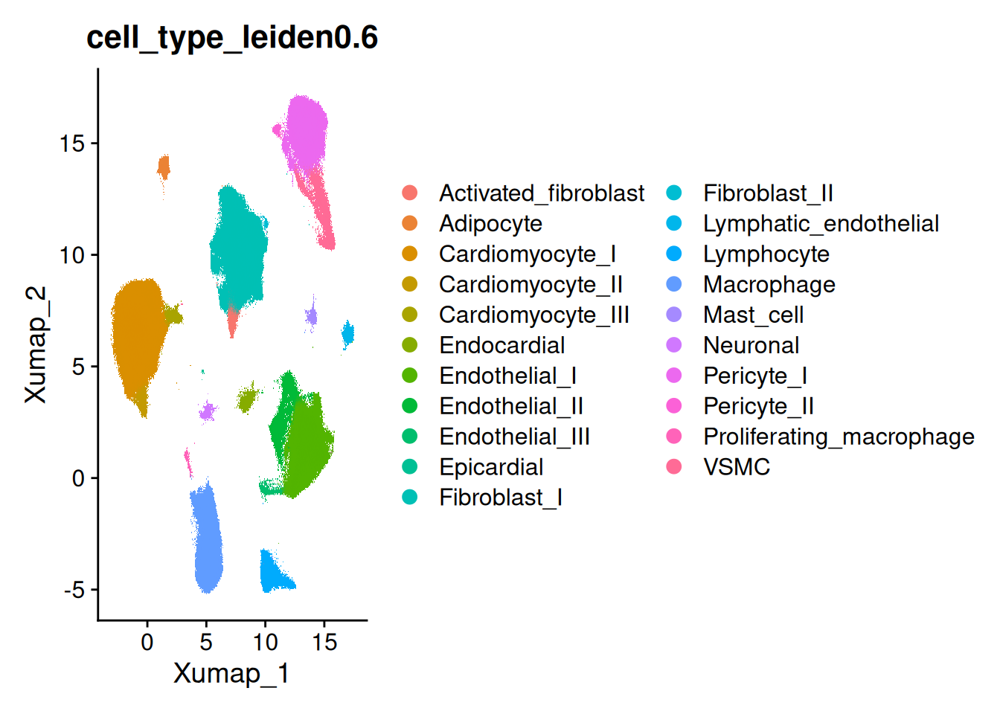
MT_data_norm <- NormalizeData(MT_data, normalization.method = "LogNormalize", scale.factor = 10000)
DefaultAssay(MT_data_norm) <- "RNA"
Chaffin_data <- FindVariableFeatures(Chaffin_data, selection.method = "vst", nfeatures = 2000)
dim(MT_data)[1] 38606 1126dim(Chaffin_data)[1] 36601 592689# for demonstration, split the object into reference and query
pbmc.reference <- Chaffin_data[, 1:92689]
pbmc.query <- MT_data[, 1:1126]
# perform standard preprocessing on each object
pbmc.reference <- NormalizeData(pbmc.reference)
pbmc.reference <- FindVariableFeatures(pbmc.reference)
pbmc.reference <- ScaleData(pbmc.reference)Centering and scaling data matrixpbmc.query <- NormalizeData(pbmc.query)
pbmc.query <- FindVariableFeatures(pbmc.query)
pbmc.query <- ScaleData(pbmc.query)Centering and scaling data matrix# find anchors
anchors <- FindTransferAnchors(reference = pbmc.reference, query = pbmc.query)Performing PCA on the provided reference using 1589 features as input.Projecting cell embeddingsFinding neighborhoodsFinding anchors Found 718 anchors# transfer labels
predictions <- TransferData(
anchorset = anchors,
refdata = pbmc.reference$cell_type_leiden0.6
)Finding integration vectorsFinding integration vector weightsPredicting cell labelspbmc.query <- AddMetaData(object = pbmc.query, metadata = predictions)
pbmc.queryAn object of class Seurat
38606 features across 1126 samples within 1 assay
Active assay: RNA (38606 features, 2000 variable features)
3 layers present: counts, data, scale.data
3 dimensional reductions calculated: pca, harmony, umapp1 <- DimPlot(
pbmc.reference,
reduction = "X_umap",
group.by = "cell_type_leiden0.6",
label = TRUE
) + ggtitle("Clean Primary Reference Atlas")
p2 <- DimPlot(
pbmc.query,
reduction = "umap",
group.by = "predicted.id",
label = TRUE
) + ggtitle("Mapped Query (LogNormalize)")
p1 # good, most cells cluster to myeloid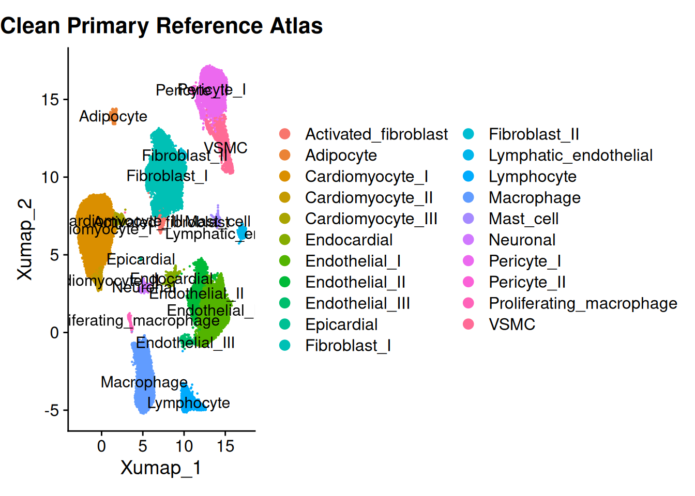
p2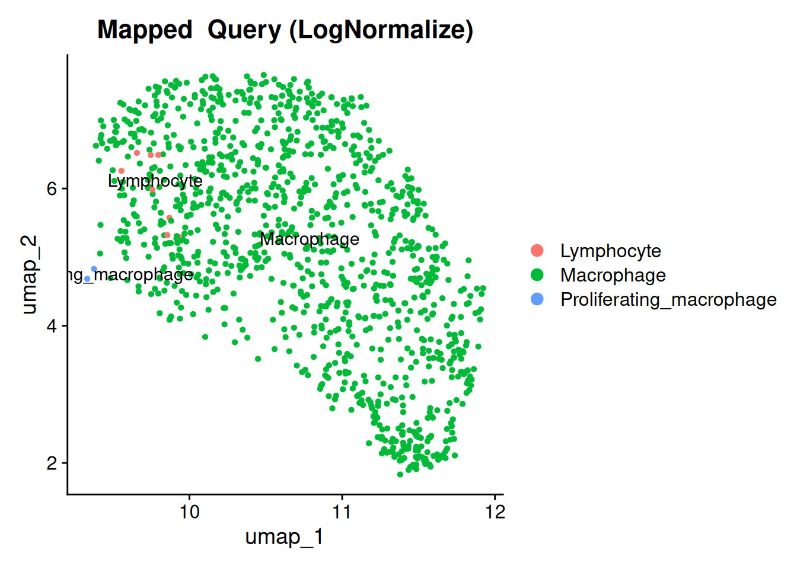
Try also with the subset
table(Chaffin_data$cell_type_leiden0.6)
Activated_fibroblast Adipocyte Cardiomyocyte_I
5210 5320 149565
Cardiomyocyte_II Cardiomyocyte_III Endocardial
5447 3457 6489
Endothelial_I Endothelial_II Endothelial_III
78375 18394 4538
Epicardial Fibroblast_I Fibroblast_II
269 141725 284
Lymphatic_endothelial Lymphocyte Macrophage
5181 16246 54715
Mast_cell Neuronal Pericyte_I
4465 4292 67600
Pericyte_II Proliferating_macrophage VSMC
1704 1276 18137 Chaffin_data_myeloid <- subset(Chaffin_data, cell_type_leiden0.6 %in% c("Macrophage", "Proliferating_macrophage"))
dim(Chaffin_data_myeloid)[1] 36601 55991pbmc.reference <- Chaffin_data_myeloid[, 1:55991]
pbmc.query <- MT_data[, 1:1126]
# perform standard preprocessing on each object
pbmc.reference <- NormalizeData(pbmc.reference)
pbmc.reference <- FindVariableFeatures(pbmc.reference)
pbmc.reference <- ScaleData(pbmc.reference)Centering and scaling data matrixpbmc.query <- NormalizeData(pbmc.query)
pbmc.query <- FindVariableFeatures(pbmc.query)
pbmc.query <- ScaleData(pbmc.query)Centering and scaling data matrix# find anchors
anchors <- FindTransferAnchors(reference = pbmc.reference, query = pbmc.query)Performing PCA on the provided reference using 1698 features as input.Projecting cell embeddingsFinding neighborhoodsFinding anchors Found 560 anchors# transfer labels
predictions <- TransferData(
anchorset = anchors,
refdata = pbmc.reference$SubCluster # first only the subcluster celltypes
)Finding integration vectorsFinding integration vector weightsPredicting cell labelspbmc.query <- AddMetaData(object = pbmc.query, metadata = predictions)
pbmc.queryAn object of class Seurat
38606 features across 1126 samples within 1 assay
Active assay: RNA (38606 features, 2000 variable features)
3 layers present: counts, data, scale.data
3 dimensional reductions calculated: pca, harmony, umapp1 <- DimPlot(
pbmc.reference,
reduction = "X_umap",
group.by = "SubCluster",
label = TRUE
) + ggtitle("Clean Primary Reference Atlas")
p2 <- DimPlot(
pbmc.query,
reduction = "umap",
group.by = "predicted.id",
label = TRUE
) + ggtitle("Mapped Query (LogNormalize)")
p3 <- DimPlot(
pbmc.query,
reduction = "umap",
group.by = "condition",
label = TRUE
) + ggtitle("Mapped Query (LogNormalize)")
p1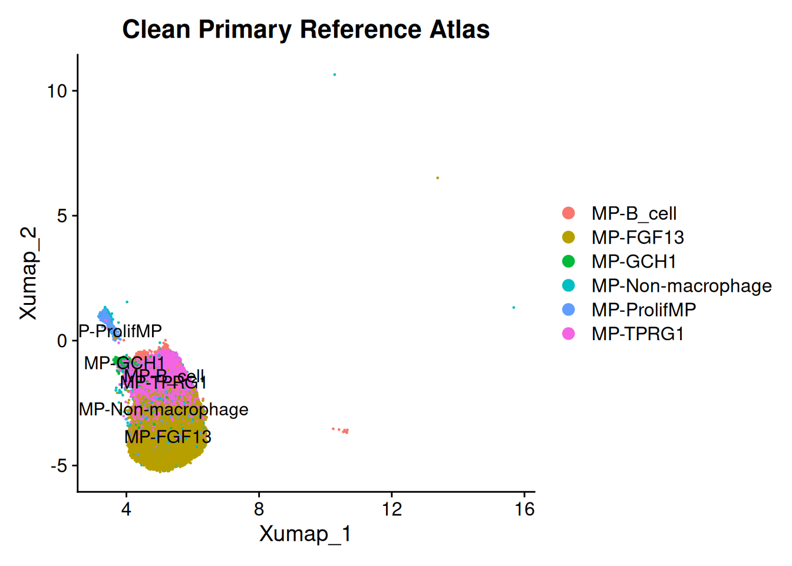
p2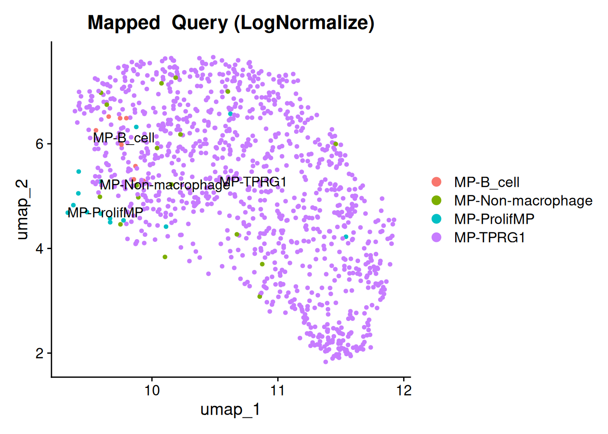
p3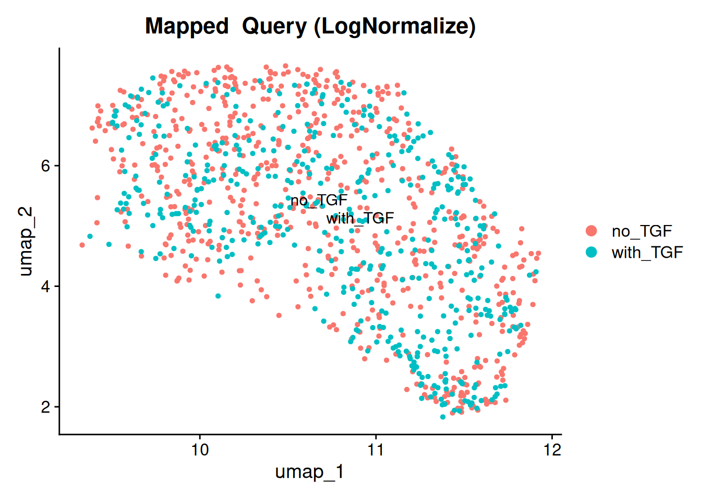
############################################################ now disease
# transfer labels
predictions <- TransferData(
anchorset = anchors,
refdata = pbmc.reference$disease
)Finding integration vectorsFinding integration vector weightsPredicting cell labelspbmc.query <- AddMetaData(object = pbmc.query, metadata = predictions)
pbmc.queryAn object of class Seurat
38606 features across 1126 samples within 1 assay
Active assay: RNA (38606 features, 2000 variable features)
3 layers present: counts, data, scale.data
3 dimensional reductions calculated: pca, harmony, umapp1 <- DimPlot(
pbmc.reference,
reduction = "X_umap",
group.by = "disease",
label = TRUE
) + ggtitle("Clean Primary Reference Atlas")
p2 <- DimPlot(
pbmc.query,
reduction = "umap",
group.by = "predicted.id",
label = TRUE
) + ggtitle("Mapped Query (LogNormalize)")
p3 <- DimPlot(
pbmc.query,
reduction = "umap",
group.by = "condition",
label = TRUE
) + ggtitle("Mapped Query (LogNormalize)")
p1 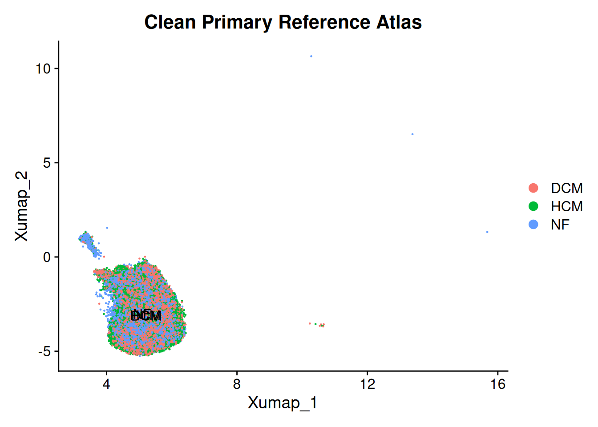
p2 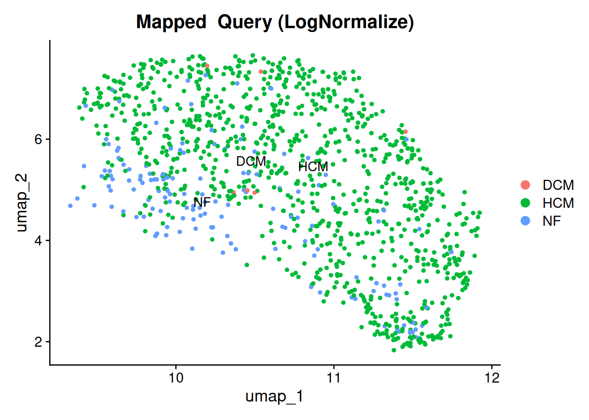
p3
pbmc.query_meta <- pbmc.query@meta.data
ggplot(pbmc.query_meta, aes(x = condition, fill = predicted.id)) +
geom_bar(position = "stack") +
theme_classic() +
labs(y = "Proportion of Cells", x = "MT TGF_status", title = "Shift in Integrated Clusters (+/- TGFb)")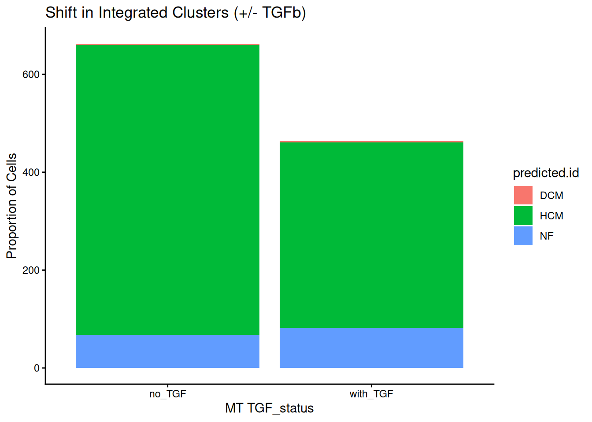
sessionInfo()R version 4.5.2 (2025-10-31)
Platform: x86_64-pc-linux-gnu
Running under: Ubuntu 24.04.3 LTS
Matrix products: default
BLAS: /usr/lib/x86_64-linux-gnu/openblas-pthread/libblas.so.3
LAPACK: /usr/lib/x86_64-linux-gnu/openblas-pthread/libopenblasp-r0.3.26.so; LAPACK version 3.12.0
locale:
[1] LC_CTYPE=en_US.UTF-8 LC_NUMERIC=C
[3] LC_TIME=en_US.UTF-8 LC_COLLATE=en_US.UTF-8
[5] LC_MONETARY=en_US.UTF-8 LC_MESSAGES=en_US.UTF-8
[7] LC_PAPER=en_US.UTF-8 LC_NAME=C
[9] LC_ADDRESS=C LC_TELEPHONE=C
[11] LC_MEASUREMENT=en_US.UTF-8 LC_IDENTIFICATION=C
time zone: Etc/UTC
tzcode source: system (glibc)
attached base packages:
[1] grid stats4 stats graphics grDevices utils datasets
[8] methods base
other attached packages:
[1] future_1.75.0 ggpubr_0.6.3
[3] circlize_0.4.17 lubridate_1.9.4
[5] stringr_1.5.2 purrr_1.2.2
[7] tidyr_1.3.1 tidyverse_2.0.0
[9] ComplexHeatmap_2.26.1 ggrain_0.1.2
[11] enrichplot_1.30.5 ggforce_0.5.0
[13] DT_0.34.0 UCell_2.14.0
[15] assertthat_0.2.1 SCpubr_3.0.1
[17] forcats_1.0.1 fgsea_1.36.2
[19] DOSE_4.4.0 GO.db_3.22.0
[21] org.Hs.eg.db_3.22.0 AnnotationDbi_1.72.0
[23] clusterProfiler_4.18.4 ggtangle_0.1.2
[25] ggarchery_0.4.4 EnhancedVolcano_1.28.2
[27] tibble_3.3.0 MAST_1.36.0
[29] speckle_1.10.0 harmony_1.2.4
[31] Rcpp_1.1.0 clustree_0.5.1
[33] ggraph_2.2.2 scDblFinder_1.24.10
[35] SingleCellExperiment_1.32.0 SummarizedExperiment_1.40.0
[37] Biobase_2.70.0 GenomicRanges_1.62.1
[39] Seqinfo_1.0.0 IRanges_2.44.0
[41] S4Vectors_0.48.0 BiocGenerics_0.56.0
[43] generics_0.1.4 MatrixGenerics_1.22.0
[45] matrixStats_1.5.0 ggrepel_0.9.6
[47] cowplot_1.2.0 patchwork_1.3.2
[49] scCustomize_3.2.4 hdf5r_1.3.12
[51] Seurat_5.4.0 SeuratObject_5.3.0
[53] sp_2.2-0 ggplot2_4.0.0
[55] dplyr_1.1.4 readr_2.1.5
[57] workflowr_1.7.2
loaded via a namespace (and not attached):
[1] R.methodsS3_1.8.2 ggpp_0.6.1 goftest_1.2-3
[4] Biostrings_2.78.0 vctrs_0.7.3 spatstat.random_3.4-2
[7] digest_0.6.37 png_0.1-8 shape_1.4.6.1
[10] git2r_0.36.2 deldir_2.0-4 parallelly_1.46.1
[13] fontLiberation_0.1.0 MASS_7.3-65 reshape2_1.4.5
[16] foreach_1.5.2 httpuv_1.6.16 qvalue_2.42.0
[19] withr_3.0.2 ggrastr_1.0.2 xfun_0.58
[22] ggfun_0.2.0 survival_3.8-3 memoise_2.0.1
[25] ggbeeswarm_0.7.3 gson_0.1.0 janitor_2.2.1
[28] systemfonts_1.3.1 tidytree_0.4.7 zoo_1.8-14
[31] GlobalOptions_0.1.3 pbapply_1.7-4 R.oo_1.27.1
[34] Formula_1.2-5 rematch2_2.1.2 KEGGREST_1.50.0
[37] promises_1.4.0 otel_0.2.0 httr_1.4.7
[40] rstatix_0.7.3 restfulr_0.0.16 globals_0.19.1
[43] fitdistrplus_1.2-5 ps_1.9.1 rstudioapi_0.17.1
[46] UCSC.utils_1.6.1 miniUI_0.1.2 processx_3.8.6
[49] curl_7.0.0 ScaledMatrix_1.19.0 polyclip_1.10-7
[52] SparseArray_1.10.8 doParallel_1.0.17 xtable_1.8-4
[55] evaluate_1.0.5 S4Arrays_1.10.1 hms_1.1.4
[58] irlba_2.3.5.1 colorspace_2.1-2 polynom_1.4-1
[61] ROCR_1.0-12 reticulate_1.44.1 spatstat.data_3.1-9
[64] magrittr_2.0.4 lmtest_0.9-40 snakecase_0.11.1
[67] ggtree_4.0.4 later_1.4.4 viridis_0.6.5
[70] lattice_0.22-7 spatstat.geom_3.6-0 future.apply_1.20.1
[73] getPass_0.2-4 scattermore_1.2 XML_3.99-0.19
[76] scuttle_1.21.0 RcppAnnoy_0.0.23 pillar_1.11.1
[79] nlme_3.1-168 iterators_1.0.14 compiler_4.5.2
[82] beachmat_2.26.0 RSpectra_0.16-2 stringi_1.8.7
[85] tensor_1.5.1 GenomicAlignments_1.46.0 plyr_1.8.9
[88] crayon_1.5.3 abind_1.4-8 BiocIO_1.20.0
[91] scater_1.38.0 gridGraphics_0.5-1 locfit_1.5-9.12
[94] graphlayouts_1.2.2 bit_4.6.0 fastmatch_1.1-8
[97] whisker_0.4.1 codetools_0.2-20 BiocSingular_1.27.1
[100] bslib_0.9.0 paletteer_1.7.0 GetoptLong_1.1.0
[103] plotly_4.11.0 mime_0.13 splines_4.5.2
[106] fastDummies_1.7.5 tidydr_0.0.6 knitr_1.50
[109] blob_1.2.4 clue_0.3-67 fs_2.1.0
[112] listenv_0.10.0 ggsignif_0.6.4 ggplotify_0.1.3
[115] Matrix_1.7-4 callr_3.7.6 statmod_1.5.1
[118] tzdb_0.5.0 tweenr_2.0.3 pkgconfig_2.0.3
[121] tools_4.5.2 cachem_1.1.0 cigarillo_1.0.0
[124] RSQLite_2.4.3 viridisLite_0.4.2 DBI_1.2.3
[127] fastmap_1.2.0 rmarkdown_2.30 scales_1.4.0
[130] ica_1.0-3 Rsamtools_2.26.0 broom_1.0.10
[133] sass_0.4.10 ggprism_1.0.7 dotCall64_1.2
[136] carData_3.0-6 RANN_2.6.2 farver_2.1.2
[139] scatterpie_0.2.6 tidygraph_1.3.1 yaml_2.3.10
[142] rtracklayer_1.70.1 cli_3.6.5 lifecycle_1.0.5
[145] uwot_0.2.4 backports_1.5.0 bluster_1.20.0
[148] BiocParallel_1.44.0 timechange_0.3.0 gtable_0.3.6
[151] rjson_0.2.23 ggridges_0.5.7 progressr_0.18.0
[154] ape_5.8-1 parallel_4.5.2 limma_3.67.0
[157] jsonlite_2.0.0 edgeR_4.9.2 RcppHNSW_0.6.0
[160] bitops_1.0-9 bit64_4.6.0-1 xgboost_3.2.0.1
[163] Rtsne_0.17 yulab.utils_0.2.3 spatstat.utils_3.2-0
[166] BiocNeighbors_2.4.0 jquerylib_0.1.4 metapod_1.19.1
[169] GOSemSim_2.36.0 dqrng_0.4.1 spatstat.univar_3.1-4
[172] R.utils_2.13.0 lazyeval_0.2.2 shiny_1.11.1
[175] htmltools_0.5.8.1 sctransform_0.4.3 rappdirs_0.3.3
[178] glue_1.8.0 spam_2.11-3 XVector_0.50.0
[181] gdtools_0.4.4 RCurl_1.98-1.17 treeio_1.34.0
[184] rprojroot_2.1.1 scran_1.38.0 gridExtra_2.3
[187] igraph_2.2.1 R6_2.6.1 ggiraph_0.9.3
[190] labeling_0.4.3 cluster_2.1.8.1 aplot_0.2.9
[193] GenomeInfoDb_1.46.2 mcprogress_0.1.1 DelayedArray_0.36.0
[196] tidyselect_1.2.1 vipor_0.4.7 car_3.1-5
[199] fontBitstreamVera_0.1.1 rsvd_1.0.5 KernSmooth_2.23-26
[202] S7_0.2.0 fontquiver_0.2.1 data.table_1.17.8
[205] htmlwidgets_1.6.4 RColorBrewer_1.1-3 rlang_1.3.0
[208] spatstat.sparse_3.1-0 spatstat.explore_3.5-3 ggnewscale_0.5.2
[211] beeswarm_0.4.0